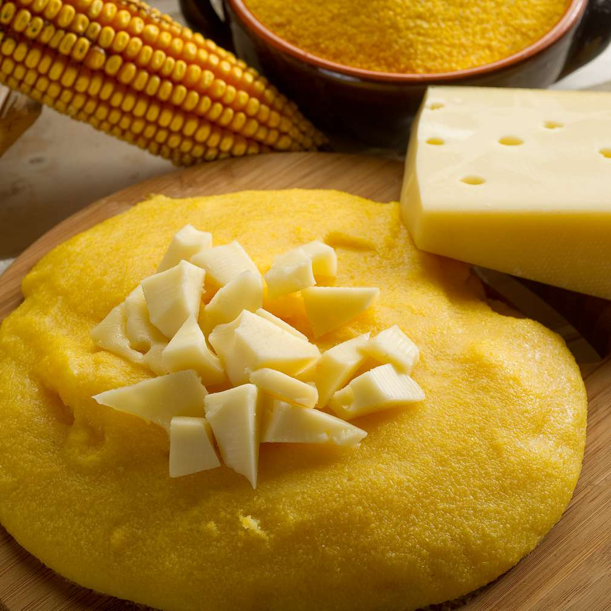

Mamaliga

Indeed, the BEST way to replace bread, is our trusty Mamaliga
Also known as Cornmeal Porridge, Mamaliga is known for being made when you don't feel like eating those high carbs bread!
Ancient dish that began as peasant food, now is served at fine restaurants.
This is a basic soft mamaliga recipe, but the porridge can also be baked or fried. No matter how you prepare it, the mixture does need to be stirred frequently as it cooks for about 10 minutes on the stovetop.
Ingredients:
- 3 1/2 cups of water;
- 1 teaspoon of salt, or after taste;
- 2 tablespoons of butter;
- 1 cup of coarse yellow cornmeal.
Preparation:
- Bring the water to a rolling boil. Add the salt and butter, stirring to melt.
- Using a wooden spoon, add the cornmeal very gradually, while stirring constantly in the same direction.
- Simmer over low heat, stirring frequently, until it thickens and starts to pull away from the sides of the pot.
- Serve hot, which you can add cheese and/or herbs if you prefer.
- Bon appétit!
Return to top.
Return to main page.